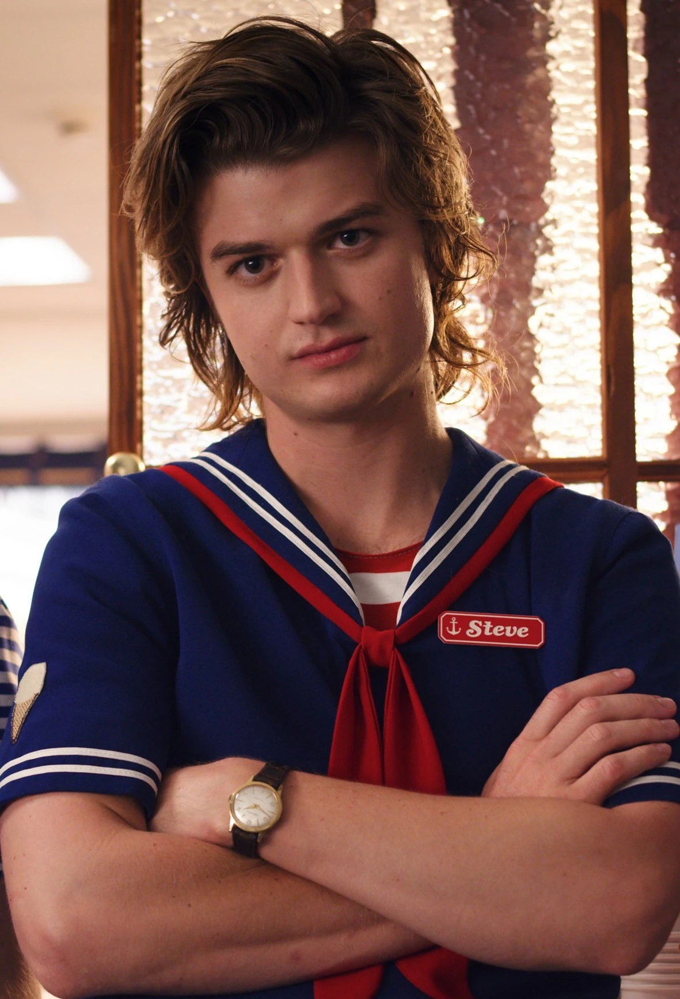

Steve Harrington is a fictional character from the Netflix television show Stranger Things, portrayed by Joe Keery. Though initially characterized as a stereotypically unlikeable jock, Steve has progressed throughout the series into a more courageous, thoughtful, and caring character. His character development has been well received, with critics calling him the show's breakout character and its emotional anchor.[1] Initially a part of the first season's recurring cast, Steve was promoted to series regular in season 2.[2]
Steve is initially portrayed as a stereotypical 1980s popular “jock”; he has an antagonistic personality, yet attracts the attention and admiration of many students. Steve is shown to be dating Nancy Wheeler, but after he harasses Jonathan Byers by breaking his camera, Nancy seems to become close to Jonathan. After Steve sees Jonathan and Nancy together, he accosts Jonathan, but is beaten by him in a fight. This causes Steve to see the error of his ways and abandon his former friends. Traveling to the Byers' home to apologize to the pair, he becomes involved in Nancy and Jonathan's fight against the Demogorgon, which they successfully banish. At the conclusion of the season, Nancy buys Jonathan a new camera and Steve continues his relationship with Nancy, while becoming more friendly towards Jonathan after their shared experience.
Steve's relationship with Nancy is stressed, and he breaks up with her after she will not say she loves him. He calls her out after her drunken tirade at a party, during which she called their relationship fake. Steve also finds himself at odds with Billy Hargrove, a new student at the school who seeks to become its tough guy. Steve becomes involved with Mike Wheeler and his friends after Dustin asks him to help find his "pet" D'Artagnan, unaware it is a creature from the Upside Down that his friends call a “Demodog”. Steve and Dustin bond over how to talk to girls, and soon Steve also takes him, Mike, Lucas, and Max, Billy's step-sister, under his wing. Steve protects the children as Demodogs start ravaging across Hawkins, giving time for Eleven and Jim Hopper to close the gate to the Upside Down, and for Will Byers to have the Mind Flayer exorcised from his body. He also defends the kids against Billy, and is knocked unconscious before Max is able to disable her brother. Later, during the night of the Snow Ball, a school dance, Steve gives Dustin advice while driving him to the dance, finally acknowledging a caring side to himself.